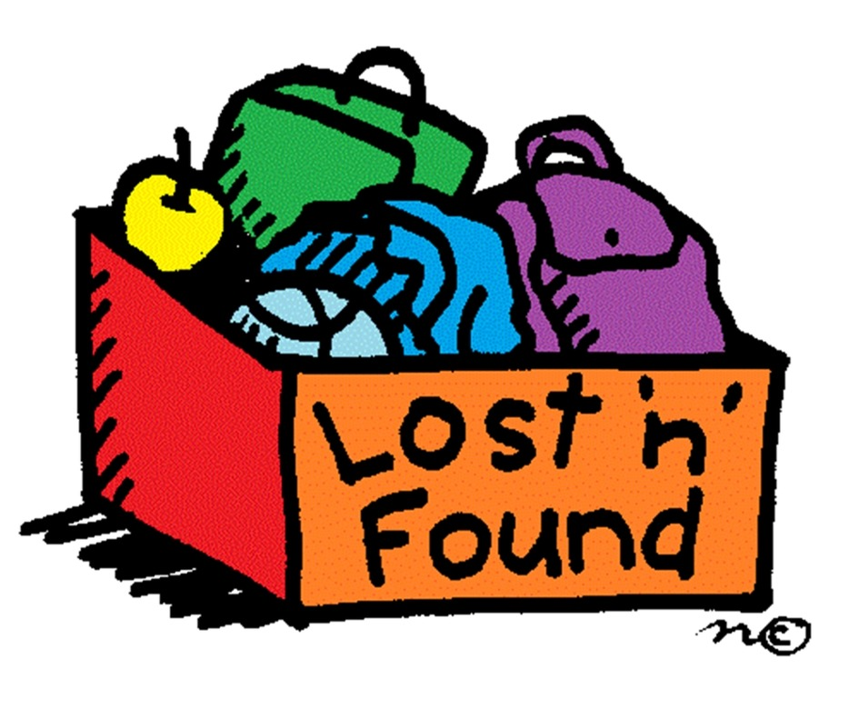

습득물 게시판 이용 방법 및 유의사항

[이용방법]
카테고리 선택 및 키워드 검색을 통해 등록된 습득물 중 내 물건을 쉽게 찾아보세요!
혹시 학교나 학교 근처에서 습득한 물건이 있다면 습득물 등록을 통해 주인을 찾아주세요!
(추후 포인트 제도 / 기프티콘 증정 등 리워드 서비스가 제공될 예정입니다.)
[유의사항]
타인의 물건을 허위로 반환받거나 탈취할 경우,
유실물법에 근거하여 점유이탈물횡령죄로 처벌받을 수 있습니다.
또한, 본 사이트의 목적과 무관한 홍보성, 유해성 게시물이나 메시지는
사전 경고 없이 삭제 및 회원 탈퇴 될 수 있습니다.